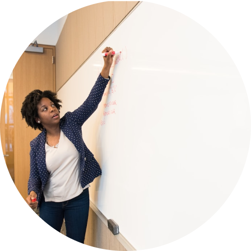

HUE is a UCLA based UX network project.
As a start, we wanted to create a web platform to network, collaborate, and learn in order to be better prepared for professional UX opportunities.
Impact
- By the end of 2022, 32 active members and 9 advisors with diverse backgrounds.
- Yearly growth with new applicants: 2020 (7), 2021 (14), 2022 (29)
- 80% Retention rate (out of 52 applicants)
- 7 projects with the industry partners
- HUE Members have been hired by companies like Google, McGraw Hill, University of Southern California, eBay, LinkedIn, and Digital Corp, and accepted for the graduate schools like the University of Washington and Carnegie Mellon University.
Context
"I want to be a UX professional but I don't know how to start..."
The Problem:
Many students at UCLA are interested in getting into the UX space, however, they are unsure where to start. A typical UX job requires 3+ years of experience for applicants and most internship opportunities are discipline-based, therefore students from an interdisciplinary program like Digital Humanities with non-design and non-programming experience are hardly exposed to professional user experience project experience. This is despite the fact that UX research and design require a strong sense of humanities, exploring “human-centered” experiences, beyond technical skills design and programming.
The Solution:
To provide a web-based networking space between design and research volunteers and clients, with projects focusing on humans in the human-centered design process.
The Co-creative Value:
The volunteers will acquire the practical skills and outcomes by participating in a project, partly or fully as much as they can contribute; while the clients can have creative design solutions based on human research conducted by truly interdisciplinary (or transdisciplinary) team members.
How might we build up a network space to help each other on UX projects?
Process
The design process for the product development (HUE) and web presence design (2020).
Aspiring ux-ers face imposter syndrome
The team interviewed peers at UCLA and completed a self-questionnaire to explore how individuals explore their career interests in user experience. Here is a summary of the findings:
| Theme | Details |
|---|---|
| Future Career Goals | UX Designer/Researcher with a focus on humanistic research, aesthetic judgment, and experience |
| Strengths or Weaknesses | Strength: Empathy, Attention to detail Weakness: Confidence experience |
| Common Challenges | So much to learn, imposter syndrome - Research + data + craft/prototype experiences Social issues + humanistic purpose |
| Expected Outcome | Connect + collaborate + like-minded individuals Real-world problems Freelance Experience |
| Competitive Analysis | (Slack, Discord, Behance, Wix, Squarespace, Handshake) Overwhelming + difficult to keep up-to-date Portfolios - What to present? Feedback, Templates Meeting other individuals interested in UX through job-searching sites (Handshake, LinkedIn) |
A desire to collaborate with like-minded individuals and solve real-world problems
Based on findings between our own responses and expectations for a UCLA-based network, we outlined the key features of members, projects, and resources as what we wanted to see on our platform:
Four types of personas can be involved in this networking project:
(ucla student)

UCLA undergraduate
After taking DH150, she gained confidence and motivation to be UXer and joined HUE. She participated in Baloon project for usability testing. With this experience, she understands how to roll out her career prep for UXer and looks forward to more project opportunities.
(ucla graduates)
Recent graduate
He searched for a UX community at UCLA where he graduated and found HUE. Neo found it very relevant to him by checking the diverse background of the current members. He joined HUE and enjoys spending time after work to build up a portfolio with the Baloon project.
(potential client)
Small business owner
She was connected with HUE and loved its idea of transparency and co-creative process. After the kick-off meeting to share her expectation, she joined the weekly meeting with the enthusiastic HUE members and collaborated on the user research and the design process.
(professional)

UX professional
She was invited to HUE as an advisor to help members with the practices in UX research and design. Mia enjoys guiding the members and providing constructive comments, which helps her to learn and refresh her own research and design practice.
Humans in User Experience
When deciding on the title of our design consulting project, we wanted to touch upon each of our team member’s roots in Digital Humanities. In striving for a humanities-based brand, we came upon HUE, an abbreviation for “Humans in User Experience”. While UE is not a common abbreviation for User eExperience (UX), we felt this was a part of our platform that we could leverage and differentiate ourselves from other UX networks. HUE is also a play on the design terms meaning a color or shade.
Information Architecture
Three main features of communication, collaboration, and information sharing are provided through the website.
Wireframes
Here are the key wireframes to test the core content and the layout.
User flows
Depending on the user's situation, for non-members, current working members, and clients, users can complete different type of communication, collaborative relationship building, and information sharing tasks.
Low-fidelity Prototype (part)
The detailed user sequence and interation points over the wireframes.
Cognitive Walkthrough & Stakeholder Review
We had three rounds of team review with cognitive walkthrough. We found that the mentor information was missing in the wireframe and added the list as 'advisors'. We replaced the inputs with Google forms to make it easier to share and manage the dataset to increase accuracy of data (avoiding bot entries) and ease of database management. The latest revision reflects:
- One page layout: Integrated within menu structure
- Simplified submenus: Member profile as a popup with 100 word bio
- Project Dashboard: Utilize the progressive report templates toward the final presentation material
- Add useful resources with the contents created by members and advisors
High-Fidelity Prototype (front page)
By applying the design system developed with the brand logo (color scheme with warm orange, yellow and dark gray) interface design was drafted and tested. The detail contents were filled with. Accessibility audit was conducted to check the color contrast requirements.
Development
We decided to use the ucla digital humanities webhost (humspace). Bootstrap was used as CSS framework. PHP was used for the member login process.
Experience the interactive Beta Website (2020 Summer)
As increasing number of the members and the advisors, we slightly updated the interface design. It needs still more work for the mobile firnedly version.
Experience the current Website (2022 Winter)